Nolan Adams
How to set up BitLocker on Windows 10 and 11. Ensure the system is up-to-date before proceeding.
BitLocker is only supported on Windows Education, Professional, Professional for Workstations, and Enterprise editions.
Go to the BitLocker settings and click Turn on BitLocker.
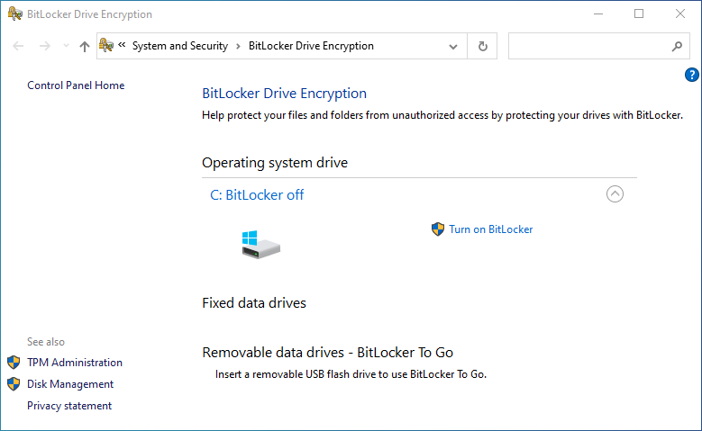Save your recovery key in a safe location. It must be on a different drive than the one you are encrypting. This recovery key is needed to decrypt the drive in the event you lose or forget your PIN.
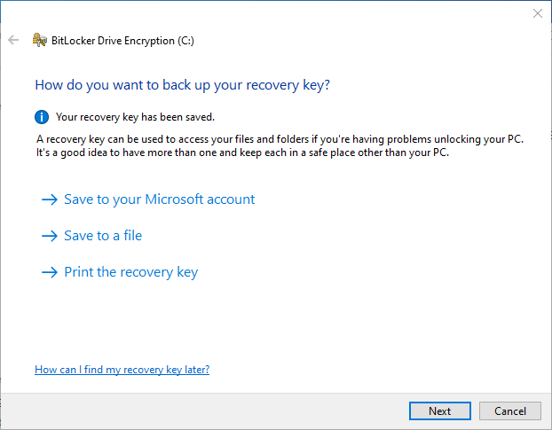Choose either to encrypt the entire drive or just the allocated space.
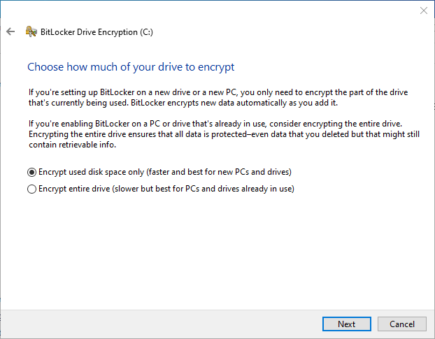Choose the encryption mode for the drive.
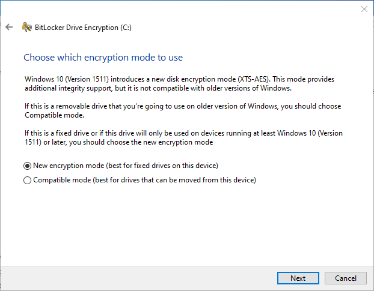Check whether the system can successfully read the encryption key on boot. This step requires a restart.
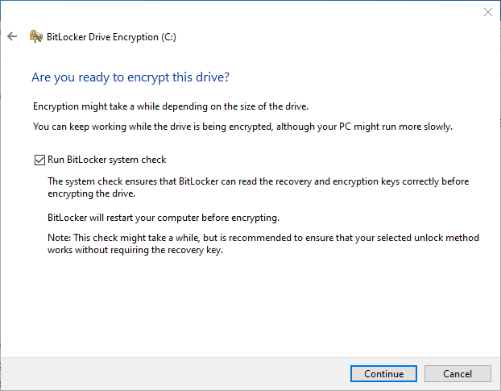Click the BitLocker notification icon to see the progress.
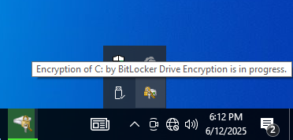Wait for BitLocker to finish encrypting the drive.
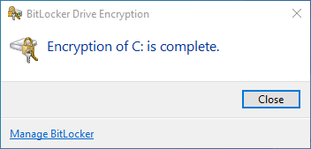Now we will configure BitLocker to require a decryption PIN on boot. Open the Group Policy Editor and navigate to Computer Configuration > Administrative Templates > Windows Components > BitLocker Drive Encryption > Operating System Drives.
Select the policy titled Require additional authentication at startup.
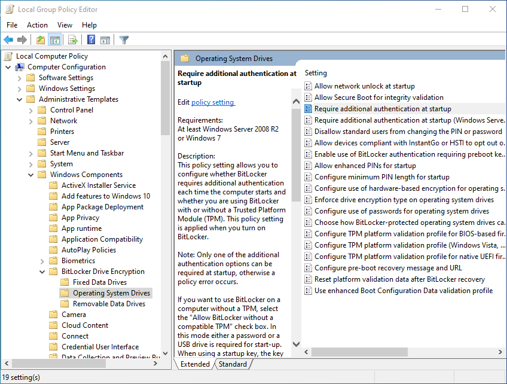Enable the policy, and configure it as shown below. You may choose either Allow or Require under the dropdown menus. Click OK when finished.
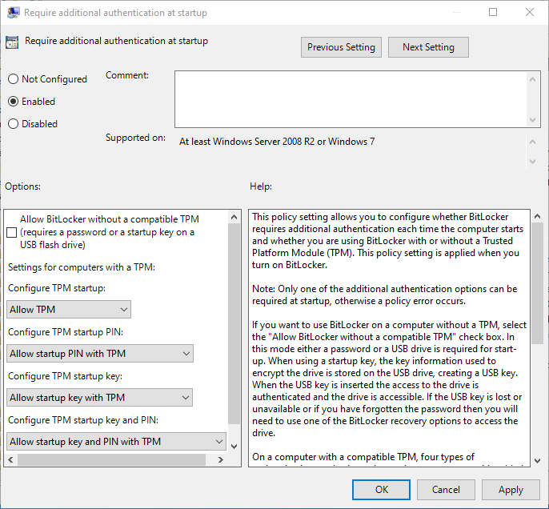Re-open the BitLocker settings and click Change how drive is unlocked at startup.
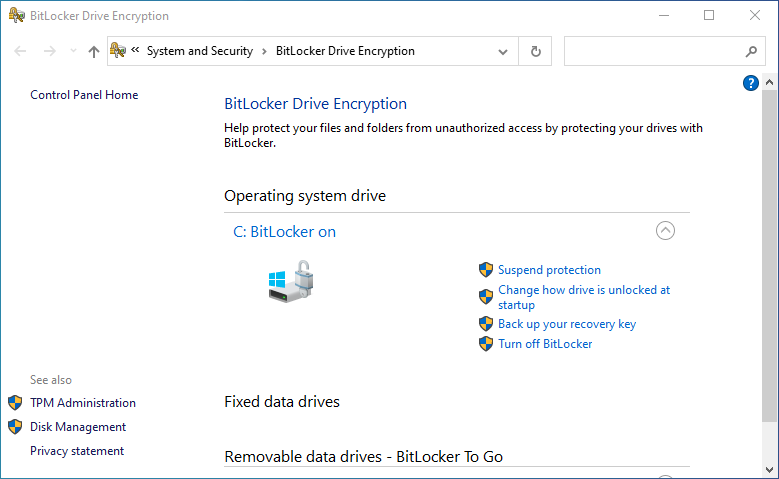Click the button labeled Enter a PIN (recommended).
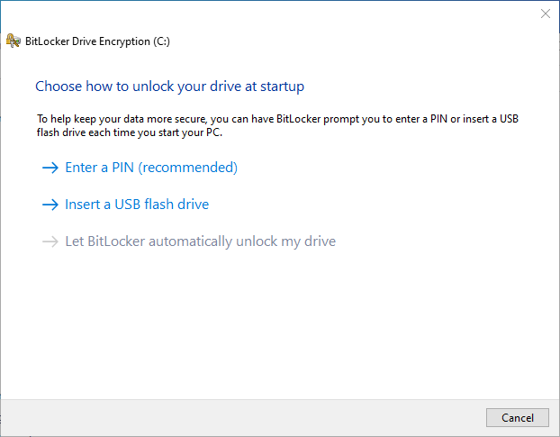Enter your desired PIN and click Set PIN.
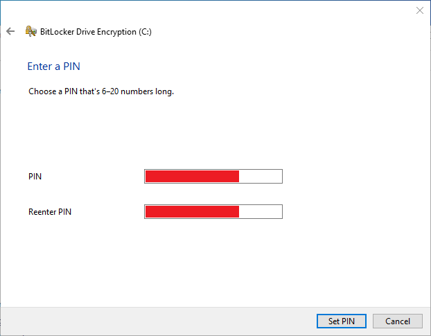Reboot your computer. You will now be prompted to enter your PIN at bootup in order to decrypt your drive.
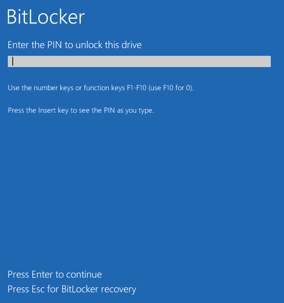